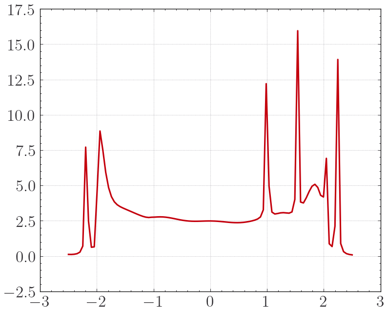
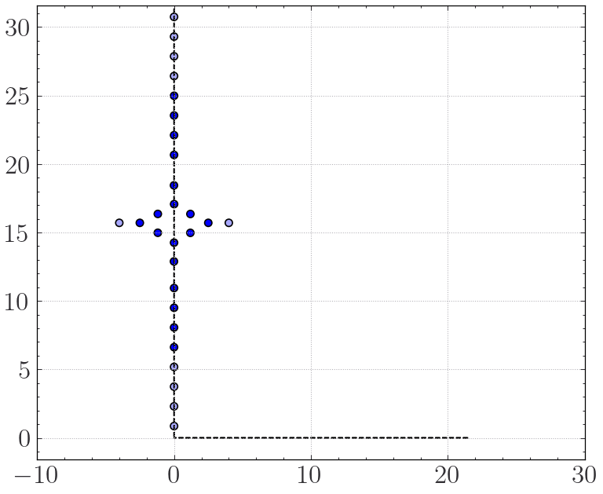
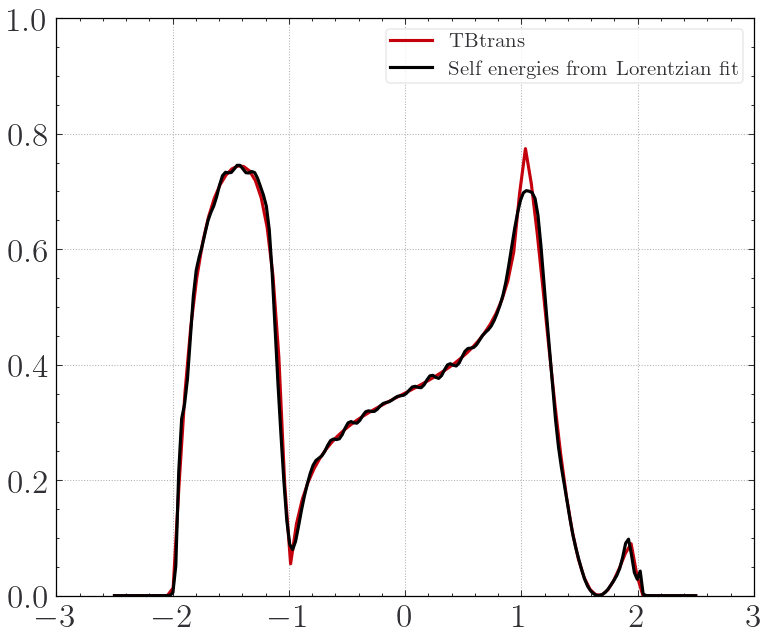
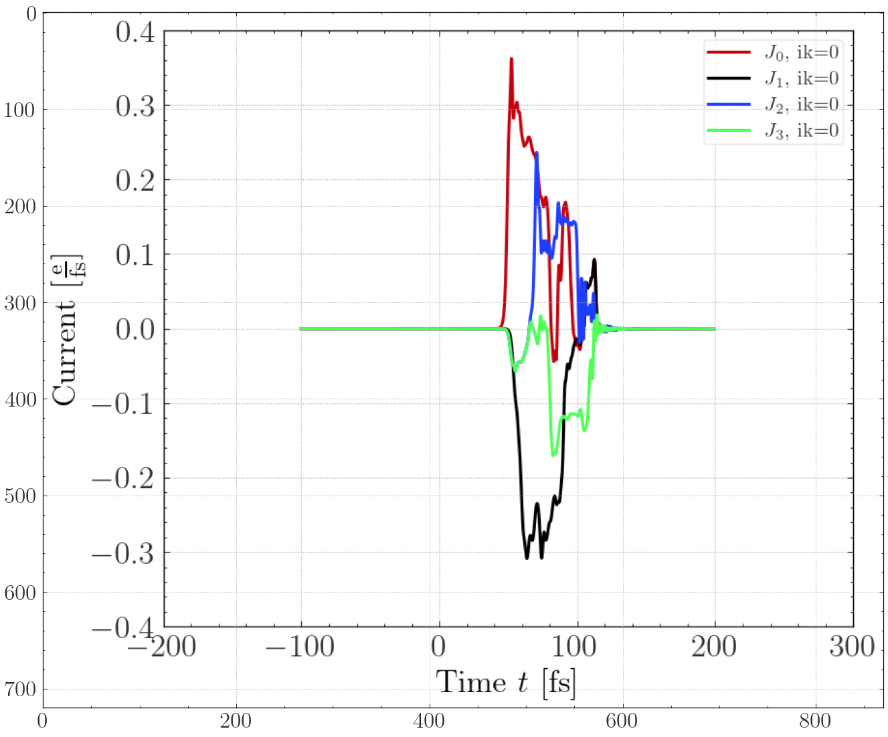
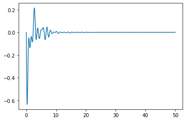
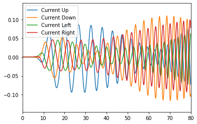
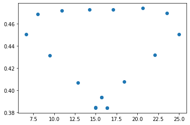

[1]:
import matplotlib.pyplot as plt
import sisl
import numpy as np
from Zandpack.TimedependentTransport import TD_Transport
from Structures.Structures import Benzene_EU, Benzene_ED, Benzene_Dev
import matplotlib.image as img
dep:0: SislDeprecation: __init__ argument sc has been deprecated in favor of lattice, please update your code. [>=0.15] [removed in 0.16]
dep:0: SislDeprecation: __init__ argument sc has been deprecated in favor of lattice, please update your code. [>=0.15] [removed in 0.16]
warn:0: SislWarning: Lattice got initialized with one or more lattice vector(s) with 0 length. Use with care.
warn:0: SislWarning: Lattice got initialized with one or more lattice vector(s) with 0 length. Use with care.
dep:0: SislDeprecation: __init__ argument sc has been deprecated in favor of lattice, please update your code. [>=0.15] [removed in 0.16]
It is assumed that the following code will make sense given that last tutorials.
[2]:
line = np.linspace(-2.5, 2.5, 100) + 1j * 1e-2
line = np.vstack((line, line,
line, line
)) # Energy Sampling
C = sisl.Atom('C', R = 2.0)
H_idx = []
for i,a in enumerate(Benzene_Dev.atoms):
if a.Z == 1:
H_idx+= [i]
else:
Benzene_Dev.atoms[i] = C
for i,a in enumerate(Benzene_EU.atoms):
Benzene_EU.atoms[i] = C
for i,a in enumerate(Benzene_ED.atoms):
Benzene_ED.atoms[i] = C
BenD = Benzene_Dev.remove(H_idx)
[3]:
EL = sisl.geom.sc(1.5, C).move([-2.5,15.7,0])
ER = sisl.geom.sc(1.5, C).move([+2.5,15.7,0])
EL.set_nsc((3,1,1))
EL = EL.add_vacuum(10,1).add_vacuum(10,2)
ER.set_nsc((3,1,1))
ER = ER.add_vacuum(10,1).add_vacuum(10,2)
Benzene_EU.set_nsc((1,3,1))
Benzene_ED.set_nsc((1,3,1))
BenD = BenD.add(EL).add(ER)
EL = EL.move(-EL.cell[0])
ER = ER.move(+ER.cell[0])
BenD = BenD.add(EL).add(ER)
H_Benzene_EU = sisl.Hamiltonian(Benzene_EU)
H_Benzene_ED = sisl.Hamiltonian(Benzene_ED)
HER = sisl.Hamiltonian(ER)
HEL = sisl.Hamiltonian(EL)
HEL.construct( [[0.1, 2.0 ], [0.0, -0.5]])
HER.construct( [[0.1, 2.0 ], [0.0, -0.5]])
H_Benzene_EU.construct( [[0.1, 2.0 ], [0.0, -1.0]])
H_Benzene_ED.construct( [[0.1, 2.0 ], [0.0, -1.0]])
Test = TD_Transport([Benzene_EU,
Benzene_ED,
EL,ER
],
BenD,
kT_i = [0.025, 0.025,
0.025, 0.025
],
mu_i = [0.0, 0.0,
0.0, 0.0
])
Test.Make_Contour(line, 18, pole_mode="JieHu2011")
[5]:
Test.Electrodes(names = ['EU','ED',
'EL', 'ER'
],
semi_infs=["+a2", "-a2",
"-a1", "+a1"
],kp = [[1,50,1], [1,50,1],
[50,1,1], [50,1,1]
] )
Test.make_device()
Dev = Test.Device.to_sisl()
Hdev = sisl.Hamiltonian(Dev)
Hdev.construct([[0.1, 2.25],[0.0, -1.0]])
Test.run_electrodes(manual_H = [H_Benzene_EU, H_Benzene_ED, HEL, HER])
Test.run_device(manual_H = Hdev)
Test.read_data()
[[12, 13, 14, 15], [16, 17, 18, 19], [26], [27]]
Running TB-Trans in Directory: Device!
dep:0: SislDeprecation: tbtncSileTBtrans.geom is deprecated, please use '.geometry'.0.14 [>=0.16]
Calculating corrections for electrode 0. (Normal electrode)
Calculating corrections for electrode 1. (Normal electrode)
Calculating corrections for electrode 2. (Normal electrode)
Calculating corrections for electrode 3. (Normal electrode)
Building ES - H - Self Energies
[0]
Using S = S
Overlap Included!
[6]:
#Test.Inspect_Transmission(0,1)
tbt = sisl.get_sile('Device/siesta.TBT.nc')
plt.plot(tbt.E[Test.sampling_idx[0]], tbt.DOS()[Test.sampling_idx[0]])
plt.show()
Test.Device.Visualise()
#Test.Device.ase_visualise()

Normal plot

[60]:
Test.reset_all_fits()
NL = 31
min_tol = -0.0*np.ones(NL)
pdist, fact, pfact, cf = 0.1, 1.5, 1.2, 0.025
Emin, Emax = -2.5, 2.5
opts, fm= {'height':1.0, 'distance':5}, 'linear'
E1,G1=Test.PoleGuess(0,NL,Emin,Emax,fact=fact,cutoff=cf,
tol=.1,decimals=3,pole_dist=pdist,
pole_fact=pfact,opts=opts)
E2,G2=Test.PoleGuess(1,NL,Emin,Emax,fact=fact,cutoff=cf,
tol=.1,decimals=3,pole_dist=pdist,
pole_fact=pfact,opts=opts)
E3,G3=Test.PoleGuess(2,NL,Emin,Emax,fact=fact,cutoff=cf,
tol=.1,decimals=3,pole_dist=pdist,
pole_fact=pfact,opts=opts)
E4,G4=Test.PoleGuess(3,NL,Emin,Emax,fact=fact,cutoff=cf,
tol=.1,decimals=3,pole_dist=pdist,
pole_fact=pfact,opts=opts)
E1,E2,E3,E4 = E1[None,:], E2[None,:], E3[None,:], E4[None, :]
G1,G2,G3,G4 = G1[None,:], G2[None,:], G3[None,:], G4[None, :]
init_E = [E1, E2, E3, E4]
init_G = [G1, G2, G3, G4]
def run_mini(its):
Test.Fit(fact = 0.05,
Fallback_W = 30.0,
NumL = NL,
fit_mode = 'all',
force_PSD = True,
force_PSD_tol = [min_tol,]*4,
use_analytical_jac = False,
min_method = 'SLSQP',
ebounds = (-2.5, 2.5),
wbounds = (0.01, 1.5),
gbounds = (None, None),
options = {'disp':True,'maxiter':its,
'gtol':1e-7,
'ftol':1e-7,
'iprint':1
},
init_E = init_E, # Give initial ei's and gi's
init_G = init_G,
fit_real_part = False,
specific_bounds = None,#[{(0 ,2) :[(0.1, 0.11), (4,5)]}, {(0 ,5) :[(-0.1, 0.1), (4,5)]}],
alpha_PO = 0.01,
)
(0,)
No poles identified... giving you a uniform grid...
---> Problem: Specifically, P had shape (0,) inside the PoleGuess function
(0,)
No poles identified... giving you a uniform grid...
---> Problem: Specifically, P had shape (0,) inside the PoleGuess function
(0,)
No poles identified... giving you a uniform grid...
---> Problem: Specifically, P had shape (0,) inside the PoleGuess function
(0,)
No poles identified... giving you a uniform grid...
---> Problem: Specifically, P had shape (0,) inside the PoleGuess function
[61]:
run_mini(0)
Test.curvefit_all(0.00001)
Finding Lambda matrices:
False
--------------------
Optimizing Lorentzian Expansion
--------------------
1
#Variables optimized for: 62
Iteration limit reached (Exit mode 9)
Current function value: 2.393178405467537
Iterations: 1
Function evaluations: 63
Gradient evaluations: 1
Lorentzian fit took 0.04618072509765625 seconds.
Finding Lambda matrices:
False
--------------------
Optimizing Lorentzian Expansion
--------------------
1
#Variables optimized for: 62
Iteration limit reached (Exit mode 9)
Current function value: 2.393178405467537
Iterations: 1
Function evaluations: 63
Gradient evaluations: 1
Lorentzian fit took 0.04401850700378418 seconds.
Finding Lambda matrices:
False
--------------------
Optimizing Lorentzian Expansion
--------------------
3
#Variables optimized for: 62
Iteration limit reached (Exit mode 9)
Current function value: 2.629187268307582
Iterations: 1
Function evaluations: 63
Gradient evaluations: 1
Lorentzian fit took 0.16903996467590332 seconds.
Finding Lambda matrices:
False
--------------------
Optimizing Lorentzian Expansion
--------------------
3
#Variables optimized for: 62
Iteration limit reached (Exit mode 9)
Current function value: 2.629187268307582
Iterations: 1
Function evaluations: 63
Gradient evaluations: 1
Lorentzian fit took 0.1496257781982422 seconds.
100%|████████████████████████████████████████████████████████████| 1/1 [00:00<00:00, 428.08it/s]
100%|████████████████████████████████████████████████████████████| 1/1 [00:00<00:00, 407.77it/s]
100%|████████████████████████████████████████████████████████████| 1/1 [00:00<00:00, 430.32it/s]
100%|████████████████████████████████████████████████████████████| 1/1 [00:00<00:00, 453.24it/s]
[62]:
lead = 2
print(Test.fitted_lorentzians[lead].is_zero)
#Test.Inspect_Lorentzian_fit(lead, 6,6, 2,2, center_lines = True)
plt.show()
Test.Inspect_transmission_from_hilbert_transform(E=np.linspace(-2.5,2.5,200),eta=1e-2)
[[0 0 0 0 0 0 0 0 0 0 0 0 0 0]
[0 0 0 0 0 0 0 0 0 0 0 0 0 0]
[0 0 0 0 0 0 0 0 0 0 0 0 0 0]
[0 0 0 0 0 0 0 0 0 0 0 0 0 0]
[0 0 0 0 0 0 0 0 0 0 0 0 0 0]
[0 0 0 0 0 0 0 0 0 0 0 0 0 0]
[0 0 0 0 0 0 1 0 0 0 0 0 0 0]
[0 0 0 0 0 0 0 0 0 0 0 0 0 0]
[0 0 0 0 0 0 0 0 0 0 0 0 0 0]
[0 0 0 0 0 0 0 0 0 0 0 0 0 0]
[0 0 0 0 0 0 0 0 0 0 0 0 0 0]
[0 0 0 0 0 0 0 0 0 0 0 0 0 0]
[0 0 0 0 0 0 0 0 0 0 0 0 0 0]
[0 0 0 0 0 0 0 0 0 0 0 0 0 0]]

[63]:
Test.tofile('4E')
Finding eigenvalues and eigenvectors
Maximum of eigenvalues of Lorentzian Gammas: 1.779205
Minimum of eigenvalues of Lorentzian Gammas: 0.0
If the minimum is negative, you should take extra care!
( if minimum negative Check eigenvalues of $\Gamma$)
/home/investigator/Desktop/Code/PythonModules/Zandpack/Zandpack/TimedependentTransport.py:1159: RuntimeWarning: overflow encountered in exp
f = 1/(1 + np.exp((e - mu_dev)/kT_dev))
[66]:
!SCF Dir=$PWD file=4E
!psinought Dir=$PWD file=4E
!mpirun -np 5 --oversubscribe zand Dir=$PWD
▂▃▅▆▇█ S █ C █ F █(v. 1.0)█▇▆▅▃▂
(self-consistent field solver)
Implements the TranSIESTA method with adaptive bias window integration.
An orthogonal basis is assumed and is implemented in largely in NumPy.
See Papior, Nick, et al. (2017) and Refs. therein
SCF Program Start
sys.argv: ['/home/investigator/Desktop/Code/PythonModules/Zandpack/Zandpack/cmdtools/SCF', 'Dir=/home/investigator/Desktop/TD_stuff/nb_tutorial/TightBinding/T4_N_elec', 'file=4E']
{'Contour': 'None', 'kT': '0.025', 'file': '4E', 'kweights': 'kweights.npy', 'drho_tol': '1e-5', 'history': '6', 'weight': '0.2', 'DM_start_file': 'None', 'nprocs': '1', 'backend': 'loky', 'DM_out_file': 'None', 'UfUd': 'False', 'real_line_integral': 'False', 'real_line_min': '-60.', 'real_line_max': '20.0', 'real_line_N': '20', 'real_line_exact_fermi': 'False', 'Nonequilibrium': 'False', 'DM_randomness': '0.001', 'random_on_diag_only': 'True', 'memory_conserve': 'False', 'fact_kT': '10.0', 'tolerance': '1e-8', 'quadvec_workers': '1', 'Bias': 'None', 'Dir': '/home/investigator/Desktop/TD_stuff/nb_tutorial/TightBinding/T4_N_elec'}
----> Mu = [0. 0. 0. 0.]
----> Bias= [ 0. -0. 0. -0.]
Contour-file: /home/investigator/Desktop/Code/PythonModules/Zandpack/Zandpack/cmdtools/SCF_default_Contour.npy
4
Evaluating SEs
Done
Iteration 1 | dN_max: 0.000988 | Qtot_k [8.603397+0.j]
Iteration 2 | dN_max: 0.000791 | Qtot_k [8.597394+0.j]
Iteration 3 | dN_max: 0.0 | Qtot_k [8.597394+0.j]
Converged DM in 0.0 secs. Bye Bye
▂▃▄▅▆▇█▓▒░psinought (v. 1.0)░▒▓█▇▆▅▄▃▂
Author: Aleksander Bach Lorentzen, DTU ( abalo@dtu.dk / aleksander.bl.mail@gmail.com )
Supervisor: Mads Brandbyge, DTU.
- Nick Papior from DTU compute has constributed with performance tips.
- Alexander Croy from Friedrich Schiller University has contributed
with methods for consistency checks and steadystate solution.
Please cite this article:
***Cool Article Bibtex***
psinought program start
sys.argv: ['/home/investigator/Desktop/Code/PythonModules/Zandpack/Zandpack/cmdtools/psinought', 'Dir=/home/investigator/Desktop/TD_stuff/nb_tutorial/TightBinding/T4_N_elec', 'file=4E']
OMP threading is recommended for this program! (set OMP_NUM_THREADS=#cores or MKL....)
{'file': '4E', 'maxiter': '10000', 'checkderivative': 'True', 'dl': '1.0', 'steptol': '1e-8', 'add_random': 'False', 'random_weight': '0.0001', 'L_info': 'False', 'Axb_solver': 'cgs', 'start_psi': 'None', 'memory_save': 'True', 'Xpp_optim': 'True', 'printfile': 'psinought.print', 'extreme_memory_save': 'False', 'Woodbury-inv': 'True', 'prec_to_disk': 'False', 'outer_einsum': 'True', 'Dir': '/home/investigator/Desktop/TD_stuff/nb_tutorial/TightBinding/T4_N_elec'}
psinought: Reading arrays.....
DM input from 4E/Arrays/DM_Ortho.npy
psinought: Converging steady-state with DM from 4E/Arrays/ folder.
psinought: Particle number: [8.59739438+0.j]
psinought: Bias: [ 0. -0. 0. -0.]
psinought: size: (1, 4, 67, 1, 18)
psinought: Operator Dims: 4824 X 4824
psinought: Constructing Preconditioner
psinought: Using dense blocks for the preconditioner
psinought: Construct preconditioner done.
Outer done!
Electrode 0
100%|█████████████████████████████████████████| 67/67 [00:00<00:00, 3452.10it/s]
Electrode 1
100%|█████████████████████████████████████████| 67/67 [00:00<00:00, 3204.17it/s]
Electrode 2
100%|█████████████████████████████████████████| 67/67 [00:00<00:00, 3677.43it/s]
Electrode 3
100%|█████████████████████████████████████████| 67/67 [00:00<00:00, 3652.20it/s]
psinought: cgs solver started
psinought: Converged psi in 9 iterations. (2.77 secs)
sum over |Derivative| of psi_axc
1.605252923497068e-08
psinought: ----------------
Current running with this DM at ik=0: [-2.17391642e-05+0.j -2.17391642e-05+0.j 1.08427621e-06+0.j
1.08427621e-06+0.j]
max(|DM derivative|) 6.999637186774738e-05
psinought: ----------------------
Warning from RK4pars: Something went wrong with loading k0nfig
Warning from RK4pars: Something went wrong with loading k0nfig
Warning from RK4pars: Something went wrong with loading k0nfig
Warning from RK4pars: Something went wrong with loading k0nfig
Warning from RK4pars: Something went wrong with loading k0nfig
▂▃▄▅▆▇█▓▒░zand (v. 1.0)░▒▓█▇▆▅▄▃▂
Program developed for time-dependent transport in nanostructures
at the Technical University of Denmark (DTU).
Please cite this article:
***Cool Article Bibtex***
Author: Aleksander Bach Lorentzen, DTU ( aleksander.bach@dipc.org / aleksander.bl.mail@gmail.com )
Supervisor: Prof. Mads Brandbyge, DTU.
- Dr. Nick Papior from DTU compute has constributed with performance tips.
- Dr. Alexander Croy from Friedrich Schiller University has contributed
with methods for consistency checks and steadystate solution.
Visit Github.com/AleksBL/?? for tutorials.
Basic function of this program:
There are two scripts that needs to accompany this program:
The "Initial.py" script, which has the information of the
initial and final times, error tolerance, and how often the script
should save the device state and some other periferal things.
The "Bias.py" should contain a function called bias that returns a
number and has arguments bias = bias(t,a), where t is time and a
is the lead index.
It should also contain a function called dH, which returns an array
with the shape of the Hamiltonian (i.e. (nk, no, no)). Its
arguments are dH = dH(t,sigma), where t is time and sigma is the
density matrix (same shape as H).
Lastly it should contain a function called "dissipator".
You have control over the density matrix EOM on the form
dDM(t)/dt = -1j/hbar[H0 + dH(t), DM(t)] - dissipator(t,DM(t)) + current term
and the bias function, which controls the applied bias of the electrodes.
In a simple example of an electromagnetic pulse, you would define
V(t) = E(t)*d, bias_0(t,0) = V(t)/2, bias(t,1) = -V(t)/2
and have dH model the potential drop over the device as a linear ramp.
You could then furthermore include a finite particle lifetime
in the device if you know the equillibrium density matrix for the
different voltages you apply. This would be on the form
dissipator(t, DM) = eta*(DM - DM_eq)
Please note that the dissipator is not particle-conserving in general.
The particle flux into the device will be
dN/dt = Tr[dissipator(t, DM)] + ( \sum_lpha J_lpha )
i.e. the dissipator will introduce a loss of electrons.
You can of course further link the Bias and Initial files to
more libraries. Nothing is stopping you from writing your own Hartree-Fock
or DFT codes to use in the dH function.
Recommended course use of program:
0. Determine equillibrum density matrix with SCF program
1. Solve for steady state psi the psinought program
2. Propagate a bit to see if the system is sufficiently steadystate.
3. Do the calculation you want to do using the steady-state as initial state.
The default ODE-solver is the RKF45 method, which samples t0
and five intermediate steps t + h[i] before deciding whenever or not
to step fourth the system or make the stepsize smaller. Therefore,
if you want to utilise more involved dH functions, you can been track
of the density matrix by saving every sixth DM being input to the dH
function.
Template files for this is located at
/home/investigator/Desktop/Code/PythonModules/Zandpack/Zandpack/boilerplatecode
Experimental and general Pulseforms can be imported from
/home/investigator/Desktop/Code/PythonModules/Zandpack/Zandpack/Pulses.py
as
from TimedependentTransport.Pulses import air_photonics_pulse, generic_pulse.
Helper tools for getting
Initial steady-state density matrix (SCF tool),
Steady-state transport (Adiabatic tool, transport mode)
Instantaneos quasiparticles, (Adiabatic tool, quasiparticle mode)
Initial file manipulation (split_k, add_spin_component tools)
are located at
/home/investigator/Desktop/Code/PythonModules/Zandpack/Zandpack/cmdtools.
You can always write
toolname --help
to get a list of the keywords you can specify.
It is recommended to use the SCF tool to obtain the equillibrium
density matrix. The default density matrix in the *TDT_file* directory
is either a direct subbing on a transiesta DM or the isolated system
DM = Uf(E_i)U^\dagger.
Look into the k0nfig file of the TimedependentTransport module to
change some of the methods used, and printed below.
MASTER PROCESS STARTED
Running on 5 nodes
Using Tolerance: 1e-06
Using Folder: 4E
Using PI version: NUMBA
Using Parallel PI: True
Using Parallel outer subtraction: True
Lazy Omega: False
OMP_NUM_THREADS: 1
NUMBA_NUM_THREADS: 1
Folder Path: /home/investigator/Desktop/TD_stuff/nb_tutorial/TightBinding/T4_N_elec
Propagation algorithm: Adaptive Runge-Kutta DOP54
NumPy Config:
Build Dependencies:
blas:
detection method: pkgconfig
found: true
include directory: /usr/local/include
lib directory: /usr/local/lib
name: openblas64
openblas configuration: USE_64BITINT=1 DYNAMIC_ARCH=1 DYNAMIC_OLDER= NO_CBLAS=
NO_LAPACK= NO_LAPACKE= NO_AFFINITY=1 USE_OPENMP= HASWELL MAX_THREADS=2
pc file directory: /usr/local/lib/pkgconfig
version: 0.3.23.dev
lapack:
detection method: internal
found: true
include directory: unknown
lib directory: unknown
name: dep139863411681952
openblas configuration: unknown
pc file directory: unknown
version: 1.26.4
Compilers:
c:
args: -fno-strict-aliasing
commands: cc
linker: ld.bfd
linker args: -Wl,--strip-debug, -fno-strict-aliasing
name: gcc
version: 10.2.1
c++:
commands: c++
linker: ld.bfd
linker args: -Wl,--strip-debug
name: gcc
version: 10.2.1
cython:
commands: cython
linker: cython
name: cython
version: 3.0.8
Machine Information:
build:
cpu: x86_64
endian: little
family: x86_64
system: linux
host:
cpu: x86_64
endian: little
family: x86_64
system: linux
Python Information:
path: /opt/python/cp310-cp310/bin/python
version: '3.10'
SIMD Extensions:
baseline:
- SSE
- SSE2
- SSE3
found:
- SSSE3
- SSE41
- POPCNT
- SSE42
- AVX
- F16C
- FMA3
- AVX2
- AVX512F
- AVX512CD
- AVX512_SKX
- AVX512_CLX
- AVX512_CNL
- AVX512_ICL
not found:
- AVX512_KNL
- AVX512_KNM
Args: ['Dir=/home/investigator/Desktop/TD_stuff/nb_tutorial/TightBinding/T4_N_elec']
Source-scheme:
Master Node: 0
Worker Nodes: 1, 2, 3, 4
Index splitting:
Worker Node 1 has indecies:
k-indices:
[0]
lead-indices:
[0]
pole-indices:
[ 0 1 2 3 4 5 6 7 8 9 10 11 12 13 14 15 16 17 18 19 20 21 22 23
24 25 26 27 28 29 30 31 32 33 34 35 36 37 38 39 40 41 42 43 44 45 46 47
48 49 50 51 52 53 54 55 56 57 58 59 60 61 62 63 64 65 66]
eig-indices:
[0]
Worker Node 2 has indecies:
k-indices:
[0]
lead-indices:
[1]
pole-indices:
[ 0 1 2 3 4 5 6 7 8 9 10 11 12 13 14 15 16 17 18 19 20 21 22 23
24 25 26 27 28 29 30 31 32 33 34 35 36 37 38 39 40 41 42 43 44 45 46 47
48 49 50 51 52 53 54 55 56 57 58 59 60 61 62 63 64 65 66]
eig-indices:
[0]
Worker Node 3 has indecies:
k-indices:
[0]
lead-indices:
[2]
pole-indices:
[ 0 1 2 3 4 5 6 7 8 9 10 11 12 13 14 15 16 17 18 19 20 21 22 23
24 25 26 27 28 29 30 31 32 33 34 35 36 37 38 39 40 41 42 43 44 45 46 47
48 49 50 51 52 53 54 55 56 57 58 59 60 61 62 63 64 65 66]
eig-indices:
[0]
Worker Node 4 has indecies:
k-indices:
[0]
lead-indices:
[3]
pole-indices:
[ 0 1 2 3 4 5 6 7 8 9 10 11 12 13 14 15 16 17 18 19 20 21 22 23
24 25 26 27 28 29 30 31 32 33 34 35 36 37 38 39 40 41 42 43 44 45 46 47
48 49 50 51 52 53 54 55 56 57 58 59 60 61 62 63 64 65 66]
eig-indices:
[0]
Zand program sourcecode location:
/home/investigator/Desktop/Code/PythonModules/Zandpack/Zandpack/mpi/zand
Timedependent Bias:
def bias(t,a):
if a == 0: return +box_pulse(t-50, 30, 2.0, 2.0)
elif a == 1: return -box_pulse(t-60, 30, 2.0, 2.0)/2
elif a == 2: return +box_pulse(t-70, 30, 2.0, 2.0)
elif a == 3: return -box_pulse(t-80, 30, 2.0, 2.0)
Timedependent part of Hamiltonian dH:
def dH(t, sigma):
A = np.zeros((1,18,18),dtype = np.complex128)
return A
Dissipator
def dissipator(t,sig):
return 0.0
hbar = 0.6582119569
Will save checkpoints: True
Checkpoints:
[40.]
Using previous save: True
Start of Run!
Using /Arrays/DM_Ortho.npy!
t=-93.86 | #steps=50 | eps=5.779e-07
Bias_0: 0.0 | J_0: -1.e-06| Total: -1e-06
Bias_1: -0.0 | J_1: -1.e-06| Total: -1e-06
Bias_2: 0.0 | J_2: -4.e-06| Total: -4e-06
Bias_3: -0.0 | J_3: -4.e-06| Total: -4e-06
t=-88.711 | #steps=100 | eps=7.560e-07
Bias_0: 0.0 | J_0: -0.| Total: -0.0
Bias_1: -0.0 | J_1: -0.| Total: -0.0
Bias_2: 0.0 | J_2: 1.e-06| Total: 1e-06
Bias_3: -0.0 | J_3: 1.e-06| Total: 1e-06
t=-83.619 | #steps=150 | eps=3.510e-07
Bias_0: 0.0 | J_0: 0.| Total: 0.0
Bias_1: -0.0 | J_1: 0.| Total: 0.0
Bias_2: 0.0 | J_2: 1.e-06| Total: 1e-06
Bias_3: -0.0 | J_3: 1.e-06| Total: 1e-06
t=-78.441 | #steps=200 | eps=6.373e-07
Bias_0: 0.0 | J_0: -0.| Total: -0.0
Bias_1: -0.0 | J_1: -0.| Total: -0.0
Bias_2: 0.0 | J_2: -1.e-06| Total: -1e-06
Bias_3: -0.0 | J_3: -1.e-06| Total: -1e-06
t=-73.318 | #steps=250 | eps=3.862e-07
Bias_0: 0.0 | J_0: -0.| Total: -0.0
Bias_1: -0.0 | J_1: -0.| Total: -0.0
Bias_2: 0.0 | J_2: -0.| Total: -0.0
Bias_3: -0.0 | J_3: -0.| Total: -0.0
t=-68.187 | #steps=300 | eps=3.554e-07
Bias_0: 0.0 | J_0: 0.| Total: 0.0
Bias_1: -0.0 | J_1: 0.| Total: 0.0
Bias_2: 0.0 | J_2: 1.e-06| Total: 1e-06
Bias_3: -0.0 | J_3: 1.e-06| Total: 1e-06
t=-63.064 | #steps=350 | eps=4.111e-07
Bias_0: 0.0 | J_0: 0.| Total: 0.0
Bias_1: -0.0 | J_1: 0.| Total: 0.0
Bias_2: 0.0 | J_2: -0.| Total: -0.0
Bias_3: -0.0 | J_3: -0.| Total: -0.0
t=-57.902 | #steps=400 | eps=3.646e-07
Bias_0: 0.0 | J_0: 0.| Total: 0.0
Bias_1: -0.0 | J_1: 0.| Total: 0.0
Bias_2: 0.0 | J_2: -0.| Total: -0.0
Bias_3: -0.0 | J_3: -0.| Total: -0.0
t=-52.759 | #steps=450 | eps=4.635e-07
Bias_0: 0.0 | J_0: -0.| Total: -0.0
Bias_1: -0.0 | J_1: -0.| Total: -0.0
Bias_2: 0.0 | J_2: -0.| Total: -0.0
Bias_3: -0.0 | J_3: -0.| Total: -0.0
t=-47.625 | #steps=500 | eps=6.378e-07
Bias_0: 0.0 | J_0: 0.| Total: 0.0
Bias_1: -0.0 | J_1: 0.| Total: 0.0
Bias_2: 0.0 | J_2: -0.| Total: -0.0
Bias_3: -0.0 | J_3: -0.| Total: -0.0
t=-42.496 | #steps=550 | eps=5.499e-07
Bias_0: 0.0 | J_0: 0.| Total: 0.0
Bias_1: -0.0 | J_1: 0.| Total: 0.0
Bias_2: 0.0 | J_2: -0.| Total: -0.0
Bias_3: -0.0 | J_3: -0.| Total: -0.0
t=-37.386 | #steps=600 | eps=7.819e-07
Bias_0: 0.0 | J_0: -0.| Total: -0.0
Bias_1: -0.0 | J_1: -0.| Total: -0.0
Bias_2: 0.0 | J_2: 0.| Total: 0.0
Bias_3: -0.0 | J_3: 0.| Total: 0.0
t=-32.269 | #steps=650 | eps=6.158e-07
Bias_0: 0.0 | J_0: -0.| Total: -0.0
Bias_1: -0.0 | J_1: -0.| Total: -0.0
Bias_2: 0.0 | J_2: 0.| Total: 0.0
Bias_3: -0.0 | J_3: 0.| Total: 0.0
t=-27.171 | #steps=700 | eps=5.385e-07
Bias_0: 0.0 | J_0: 1.e-06| Total: 1e-06
Bias_1: -0.0 | J_1: 1.e-06| Total: 1e-06
Bias_2: 0.0 | J_2: 0.| Total: 0.0
Bias_3: -0.0 | J_3: 0.| Total: 0.0
t=-22.026 | #steps=750 | eps=4.774e-07
Bias_0: 0.0 | J_0: 1.e-06| Total: 1e-06
Bias_1: -0.0 | J_1: 1.e-06| Total: 1e-06
Bias_2: 0.0 | J_2: -0.| Total: -0.0
Bias_3: -0.0 | J_3: -0.| Total: -0.0
t=-16.912 | #steps=800 | eps=8.068e-07
Bias_0: 0.0 | J_0: -0.| Total: -0.0
Bias_1: -0.0 | J_1: -0.| Total: -0.0
Bias_2: 0.0 | J_2: 0.| Total: 0.0
Bias_3: -0.0 | J_3: 0.| Total: 0.0
t=-11.807 | #steps=850 | eps=3.352e-07
Bias_0: 0.0 | J_0: -0.| Total: -0.0
Bias_1: -0.0 | J_1: -0.| Total: -0.0
Bias_2: 0.0 | J_2: 0.| Total: 0.0
Bias_3: -0.0 | J_3: 0.| Total: 0.0
t=-6.678 | #steps=900 | eps=5.489e-07
Bias_0: 0.0 | J_0: 0.| Total: 0.0
Bias_1: -0.0 | J_1: 0.| Total: 0.0
Bias_2: 0.0 | J_2: -0.| Total: -0.0
Bias_3: -0.0 | J_3: -0.| Total: -0.0
t=-1.51 | #steps=950 | eps=6.638e-07
Bias_0: 0.0 | J_0: -0.| Total: -0.0
Bias_1: -0.0 | J_1: -0.| Total: -0.0
Bias_2: 0.0 | J_2: -0.| Total: -0.0
Bias_3: -0.0 | J_3: -0.| Total: -0.0
t=3.584 | #steps=1000 | eps=8.110e-07
Bias_0: 0.0 | J_0: -0.| Total: -0.0
Bias_1: -0.0 | J_1: -0.| Total: -0.0
Bias_2: 0.0 | J_2: -0.| Total: -0.0
Bias_3: -0.0 | J_3: -0.| Total: -0.0
t=8.713 | #steps=1050 | eps=7.725e-07
Bias_0: 0.0 | J_0: -0.| Total: -0.0
Bias_1: -0.0 | J_1: -0.| Total: -0.0
Bias_2: 0.0 | J_2: 1.e-06| Total: 1e-06
Bias_3: -0.0 | J_3: 1.e-06| Total: 1e-06
t=13.836 | #steps=1100 | eps=6.091e-07
Bias_0: 0.0 | J_0: 0.| Total: 0.0
Bias_1: -0.0 | J_1: 0.| Total: 0.0
Bias_2: 0.0 | J_2: -0.| Total: -0.0
Bias_3: -0.0 | J_3: -0.| Total: -0.0
t=18.938 | #steps=1150 | eps=5.346e-07
Bias_0: 0.0 | J_0: 1.e-06| Total: 1e-06
Bias_1: -0.0 | J_1: 1.e-06| Total: 1e-06
Bias_2: 0.0 | J_2: 0.| Total: 0.0
Bias_3: -0.0 | J_3: 0.| Total: 0.0
t=24.07 | #steps=1200 | eps=7.901e-07
Bias_0: 0.0 | J_0: 0.| Total: 0.0
Bias_1: -0.0 | J_1: 0.| Total: 0.0
Bias_2: 0.0 | J_2: -0.| Total: -0.0
Bias_3: -0.0 | J_3: -0.| Total: -0.0
t=29.211 | #steps=1250 | eps=4.896e-07
Bias_0: 0.0 | J_0: 0.| Total: 0.0
Bias_1: -0.0 | J_1: 0.| Total: 0.0
Bias_2: 0.0 | J_2: 1.e-06| Total: 1e-06
Bias_3: -0.0 | J_3: 1.e-06| Total: 1e-06
t=34.342 | #steps=1300 | eps=8.522e-07
Bias_0: 0.0 | J_0: -0.| Total: -0.0
Bias_1: -0.0 | J_1: -0.| Total: -0.0
Bias_2: 0.0 | J_2: 0.| Total: 0.0
Bias_3: -0.0 | J_3: 0.| Total: 0.0
t=39.484 | #steps=1350 | eps=4.997e-07
Bias_0: 5.4e-05 | J_0: 1.3e-05| Total: 1.3e-05
Bias_1: -0.0 | J_1: -0.| Total: -0.0
Bias_2: 0.0 | J_2: -0.| Total: -0.0
Bias_3: -0.0 | J_3: -0.| Total: -0.0
t=44.61 | #steps=1400 | eps=6.387e-07
Bias_0: 0.009097 | J_0: 0.002261| Total: 0.002261
Bias_1: -0.0 | J_1: -1.1e-05| Total: -1.1e-05
Bias_2: 0.0 | J_2: -4.1e-05| Total: -4.1e-05
Bias_3: -0.0 | J_3: -4.1e-05| Total: -4.1e-05
t=49.734 | #steps=1450 | eps=5.264e-07
Bias_0: 0.86649 | J_0: 0.206661| Total: 0.206661
Bias_1: -3.5e-05 | J_1: -0.001766| Total: -0.001766
Bias_2: 0.0 | J_2: -0.006197| Total: -0.006197
Bias_3: -0.0 | J_3: -0.006197| Total: -0.006197
t=54.855 | #steps=1500 | eps=7.249e-07
Bias_0: 1.9846 | J_0: 0.297113| Total: 0.297113
Bias_1: -0.005817 | J_1: -0.087532| Total: -0.087532
Bias_2: 1e-06 | J_2: -0.055961| Total: -0.055961
Bias_3: -0.0 | J_3: -0.055961| Total: -0.055961
t=60.027 | #steps=1550 | eps=3.626e-07
Bias_0: 1.999911 | J_0: 0.258693| Total: 0.258693
Bias_1: -0.504344 | J_1: -0.240096| Total: -0.240096
Bias_2: 9.2e-05 | J_2: -0.044213| Total: -0.044213
Bias_3: -0.0 | J_3: -0.044231| Total: -0.044231
t=65.262 | #steps=1600 | eps=2.975e-07
Bias_0: 1.999999 | J_0: 0.256779| Total: 0.256779
Bias_1: -0.99477 | J_1: -0.28438| Total: -0.28438
Bias_2: 0.017121 | J_2: 0.000197| Total: 0.000197
Bias_3: -1e-06 | J_3: -0.002875| Total: -0.002875
t=70.505 | #steps=1650 | eps=9.593e-07
Bias_0: 1.999848 | J_0: 0.224334| Total: 0.224334
Bias_1: -0.999973 | J_1: -0.236956| Total: -0.236956
Bias_2: 1.252348 | J_2: 0.232553| Total: 0.232553
Bias_3: -0.000152 | J_3: -0.015911| Total: -0.015911
t=75.752 | #steps=1700 | eps=5.333e-07
Bias_0: 1.971883 | J_0: 0.163378| Total: 0.163378
Bias_1: -0.999999 | J_1: -0.275159| Total: -0.275159
Bias_2: 1.993652 | J_2: 0.107214| Total: 0.107214
Bias_3: -0.028117 | J_3: 0.00813| Total: 0.00813
t=80.963 | #steps=1750 | eps=3.708e-07
Bias_0: 0.556302 | J_0: 0.011952| Total: 0.011952
Bias_1: -0.999882 | J_1: -0.257081| Total: -0.257081
Bias_2: 1.999965 | J_2: 0.095915| Total: 0.095915
Bias_3: -1.443698 | J_3: -0.131175| Total: -0.131175
t=86.047 | #steps=1800 | eps=8.795e-07
Bias_0: 0.004679 | J_0: 0.044471| Total: 0.044471
Bias_1: -0.981009 | J_1: -0.232762| Total: -0.232762
Bias_2: 1.999998 | J_2: 0.16343| Total: 0.16343
Bias_3: -1.995321 | J_3: -0.151866| Total: -0.151866
t=91.151 | #steps=1850 | eps=9.117e-07
Bias_0: 2.8e-05 | J_0: 0.168131| Total: 0.168131
Bias_1: -0.238602 | J_1: -0.074316| Total: -0.074316
Bias_2: 1.99971 | J_2: 0.145449| Total: 0.145449
Bias_3: -1.999972 | J_3: -0.11992| Total: -0.11992
t=96.359 | #steps=1900 | eps=5.346e-07
Bias_0: 0.0 | J_0: 0.021697| Total: 0.021697
Bias_1: -0.001732 | J_1: -0.036231| Total: -0.036231
Bias_2: 1.949004 | J_2: 0.140032| Total: 0.140032
Bias_3: -1.999997 | J_3: -0.114373| Total: -0.114373
t=101.61 | #steps=1950 | eps=5.234e-07
Bias_0: 0.0 | J_0: -0.026992| Total: -0.026992
Bias_1: -9e-06 | J_1: -0.019998| Total: -0.019998
Bias_2: 0.33376 | J_2: -0.017664| Total: -0.017664
Bias_3: -1.999547 | J_3: -0.1141| Total: -0.1141
t=106.724 | #steps=2000 | eps=7.337e-07
Bias_0: 0.0 | J_0: 0.06151| Total: 0.06151
Bias_1: -0.0 | J_1: 0.061659| Total: 0.061659
Bias_2: 0.002391 | J_2: 0.019529| Total: 0.019529
Bias_3: -1.926919 | J_3: -0.131902| Total: -0.131902
t=111.835 | #steps=2050 | eps=9.612e-07
Bias_0: 0.0 | J_0: 0.082964| Total: 0.082964
Bias_1: -0.0 | J_1: 0.083314| Total: 0.083314
Bias_2: 1.4e-05 | J_2: 0.046946| Total: 0.046946
Bias_3: -0.27292 | J_3: -0.020733| Total: -0.020733
t=116.959 | #steps=2100 | eps=4.617e-07
Bias_0: 0.0 | J_0: 0.001534| Total: 0.001534
Bias_1: -0.0 | J_1: 0.001443| Total: 0.001443
Bias_2: 0.0 | J_2: -0.001039| Total: -0.001039
Bias_3: -0.00191 | J_3: -0.00262| Total: -0.00262
t=122.128 | #steps=2150 | eps=5.617e-07
Bias_0: 0.0 | J_0: -0.000207| Total: -0.000207
Bias_1: -0.0 | J_1: -0.000249| Total: -0.000249
Bias_2: 0.0 | J_2: 0.00372| Total: 0.00372
Bias_3: -1.1e-05 | J_3: 0.000774| Total: 0.000774
t=127.238 | #steps=2200 | eps=6.860e-07
Bias_0: 0.0 | J_0: -0.000348| Total: -0.000348
Bias_1: -0.0 | J_1: -0.000394| Total: -0.000394
Bias_2: 0.0 | J_2: -0.001399| Total: -0.001399
Bias_3: -0.0 | J_3: 0.000879| Total: 0.000879
t=132.362 | #steps=2250 | eps=3.573e-07
Bias_0: 0.0 | J_0: -0.000281| Total: -0.000281
Bias_1: -0.0 | J_1: -0.000268| Total: -0.000268
Bias_2: 0.0 | J_2: -0.000226| Total: -0.000226
Bias_3: -0.0 | J_3: -0.001391| Total: -0.001391
t=137.491 | #steps=2300 | eps=3.942e-07
Bias_0: 0.0 | J_0: -0.00025| Total: -0.00025
Bias_1: -0.0 | J_1: -0.000241| Total: -0.000241
Bias_2: 0.0 | J_2: -0.000316| Total: -0.000316
Bias_3: -0.0 | J_3: -6.e-06| Total: -6e-06
t=142.649 | #steps=2350 | eps=4.494e-07
Bias_0: 0.0 | J_0: -0.000189| Total: -0.000189
Bias_1: -0.0 | J_1: -0.000185| Total: -0.000185
Bias_2: 0.0 | J_2: 9.e-06| Total: 9e-06
Bias_3: -0.0 | J_3: -0.000218| Total: -0.000218
t=147.794 | #steps=2400 | eps=6.803e-07
Bias_0: 0.0 | J_0: -0.000158| Total: -0.000158
Bias_1: -0.0 | J_1: -0.000161| Total: -0.000161
Bias_2: 0.0 | J_2: -0.000307| Total: -0.000307
Bias_3: -0.0 | J_3: -0.000142| Total: -0.000142
t=152.91 | #steps=2450 | eps=5.023e-07
Bias_0: 0.0 | J_0: -0.000129| Total: -0.000129
Bias_1: -0.0 | J_1: -0.000129| Total: -0.000129
Bias_2: 0.0 | J_2: -0.000139| Total: -0.000139
Bias_3: -0.0 | J_3: -0.000203| Total: -0.000203
t=158.053 | #steps=2500 | eps=4.654e-07
Bias_0: 0.0 | J_0: -0.000111| Total: -0.000111
Bias_1: -0.0 | J_1: -0.000109| Total: -0.000109
Bias_2: 0.0 | J_2: -0.00012| Total: -0.00012
Bias_3: -0.0 | J_3: -0.000117| Total: -0.000117
t=163.216 | #steps=2550 | eps=3.913e-07
Bias_0: 0.0 | J_0: -9.1e-05| Total: -9.1e-05
Bias_1: -0.0 | J_1: -9.e-05| Total: -9e-05
Bias_2: 0.0 | J_2: -0.000113| Total: -0.000113
Bias_3: -0.0 | J_3: -0.000103| Total: -0.000103
t=168.344 | #steps=2600 | eps=5.322e-07
Bias_0: 0.0 | J_0: -7.4e-05| Total: -7.4e-05
Bias_1: -0.0 | J_1: -7.7e-05| Total: -7.7e-05
Bias_2: 0.0 | J_2: -8.7e-05| Total: -8.7e-05
Bias_3: -0.0 | J_3: -0.0001| Total: -0.0001
t=173.505 | #steps=2650 | eps=3.347e-07
Bias_0: 0.0 | J_0: -6.2e-05| Total: -6.2e-05
Bias_1: -0.0 | J_1: -6.3e-05| Total: -6.3e-05
Bias_2: 0.0 | J_2: -8.1e-05| Total: -8.1e-05
Bias_3: -0.0 | J_3: -6.8e-05| Total: -6.8e-05
t=178.672 | #steps=2700 | eps=6.727e-07
Bias_0: 0.0 | J_0: -5.3e-05| Total: -5.3e-05
Bias_1: -0.0 | J_1: -5.1e-05| Total: -5.1e-05
Bias_2: 0.0 | J_2: -5.7e-05| Total: -5.7e-05
Bias_3: -0.0 | J_3: -6.6e-05| Total: -6.6e-05
t=183.817 | #steps=2750 | eps=7.569e-07
Bias_0: 0.0 | J_0: -4.3e-05| Total: -4.3e-05
Bias_1: -0.0 | J_1: -4.3e-05| Total: -4.3e-05
Bias_2: 0.0 | J_2: -5.4e-05| Total: -5.4e-05
Bias_3: -0.0 | J_3: -5.e-05| Total: -5e-05
t=188.947 | #steps=2800 | eps=4.782e-07
Bias_0: 0.0 | J_0: -3.5e-05| Total: -3.5e-05
Bias_1: -0.0 | J_1: -3.7e-05| Total: -3.7e-05
Bias_2: 0.0 | J_2: -4.1e-05| Total: -4.1e-05
Bias_3: -0.0 | J_3: -4.6e-05| Total: -4.6e-05
t=194.136 | #steps=2850 | eps=9.422e-07
Bias_0: 0.0 | J_0: -2.9e-05| Total: -2.9e-05
Bias_1: -0.0 | J_1: -3.e-05| Total: -3e-05
Bias_2: 0.0 | J_2: -3.9e-05| Total: -3.9e-05
Bias_3: -0.0 | J_3: -3.5e-05| Total: -3.5e-05
t=199.306 | #steps=2900 | eps=5.291e-07
Bias_0: 0.0 | J_0: -2.5e-05| Total: -2.5e-05
Bias_1: -0.0 | J_1: -2.4e-05| Total: -2.4e-05
Bias_2: 0.0 | J_2: -3.e-05| Total: -3e-05
Bias_3: -0.0 | J_3: -3.3e-05| Total: -3.3e-05
RUNTIME: 73.39244341850281
--------------------------------------------------------------------------
MPI_ABORT was invoked on rank 0 in communicator MPI_COMM_WORLD
with errorcode 0.
NOTE: invoking MPI_ABORT causes Open MPI to kill all MPI processes.
You may or may not see output from other processes, depending on
exactly when Open MPI kills them.
--------------------------------------------------------------------------
Traceback (most recent call last):
File "/home/investigator/Desktop/Code/PythonModules/Zandpack/Zandpack/mpi/zand", line 859, in <module>
Worker(ROLE_INFO)
File "/home/investigator/Desktop/Code/PythonModules/Zandpack/Zandpack/mpi/zand", line 701, in Worker
h,ts = h_ts
TypeError: cannot unpack non-iterable NoneType object
[67]:
!td_info Dir=$PWD file=4E plotcurrent=1 label=Current format=png
im = img.imread('CurrentCurrentplot.png')
plt.rcParams['figure.figsize']=(15,9)
plt.imshow(im)
td_info Program Start
sys.argv: ['/home/investigator/Desktop/Code/PythonModules/Zandpack/Zandpack/cmdtools/td_info', 'Dir=/home/investigator/Desktop/TD_stuff/nb_tutorial/TightBinding/T4_N_elec', 'file=4E', 'plotcurrent=1', 'label=Current', 'format=png']
[0]
Figure(900x750)
[67]:
<matplotlib.image.AxesImage at 0x7c93c919aad0>

[71]:
import sparse as sp
no = Test.Hdense.shape[-1]
v_mnpq = sp.DOK((no,no,no,no))
X = Test.Device.pos_real_space[Test.pivot]
prefactor = 0.5#14.39 # eV * Å
for m in range(no):
for n in range(no):
for p in range(no):
for q in range(no):
if m!=n and n == p and m==q:
dij = np.linalg.norm(X[m] - X[n])
v_mnpq[m,n,p,q] = prefactor/dij
v_mnpq = v_mnpq.to_coo()
amp = 1 / 4
w1,w2,w3,w4 = 0.5, 0.5, 0.5, 0.5
p1,p2,p3,p4 = 0.0, np.pi/2, np.pi, 3/2*np.pi
def dH(t, sig):
out = np.zeros(sig.shape, dtype = np.complex128)
dsig = sig# - sig0
out[0] += 2 * ( v_mnpq * dsig[0][None, :, :, None]).sum(axis = (1,2)).todense()
out[0] -= 1 * ( v_mnpq * dsig[0][None, :, None, :]).sum(axis = (1,3)).todense()
return out
def env(t,t0):
return 1-1/(1 + np.exp((t - t0)))
def ramp(t,t0):
return 1+t/50
def delta(t, a):
if a == 0:
return amp*env(t, 10)*np.sin(w1 * t*ramp(t,10) + p1)
elif a == 1:
return amp*env(t, 10)*np.sin(w2 * t*ramp(t,10) + p2)
elif a == 2:
return amp*env(t, 10)*np.sin(w3 * t*ramp(t,10) + p3)
elif a == 3:
return amp*env(t, 10)*np.sin(w4 * t*ramp(t,10) + p4)
[72]:
v_mnpq.max()
[72]:
0.3635461609017992
[50]:
t, d = RK4(f,
sig0,psi0, omg0,
1e-9, 0.0,50.0,
dH,z_delta,
Test.Ixi, name = 'Mol',
elec_names = ['EU', 'ED', 'EL', 'ER'])
sig0_2 = np.load('Mol_last_sig.npy')
psi0_2 = np.load('Mol_last_psi.npy')
omg0_2 = np.load('Mol_last_omega.npy')
[54]:
plt.plot(t, d['current_ER'])
[54]:
[<matplotlib.lines.Line2D at 0x7f344cc53e80>]

[27]:
t, d = RK4(f,
sig0_2,psi0_2, omg0_2,
1e-9, 0.0,100.0,
dH,delta,
Test.Ixi, name = 'Mol',
elec_names = ['EU', 'ED', 'EL', 'ER'])
[28]:
#Test.Inspect_transmission_from_hilbert_transform(eta = 1e-2); plt.ylim([-0.2, 5])
plt.plot(t, d['current_EU'],label = 'Current Up')
plt.plot(t, d['current_ED'],label = 'Current Down')
plt.plot(t, d['current_EL'],label = 'Current Left')
plt.plot(t, d['current_ER'],label = 'Current Right')
plt.legend()
plt.xlim([0,80])
#from siesta_python.funcs import diff_central
#N = np.trace(d['density matrix'],axis1 = 2, axis2 = 3)
#plt.plot(t,np.array(d['current_EU']) + np.array(d['current_ED'])+ np.array(d['current_ER']) + np.array(d['current_EL']))
#plt.show()
#plt.plot(t,N)
[28]:
(0.0, 80.0)

[134]:
[134]:
(7.731611269326793-3.0535988906951797e-16j)

[ ]:
from siesta_python.funcs import interpolate_and_fft
[ ]:
N = np.array(d['density matrix'])
N = np.trace(N, axis1 = 2, axis2 = 3)
idx = t>0
ft,w = interpolate_and_fft(t[idx], N[idx,0], 10000)
[ ]:
plt.plot(w, np.abs(ft)/5000)
plt.ylim([0,10])
plt.xlim([0,0.5])
[ ]:
plt.plot(t,N)
[ ]:
tbt = sisl.get_sile('Device/siesta.TBT.nc')
xyz = Test.Device.pos_real_space[tbt.pivot()]
[ ]:
xyz.shape
[ ]:
dm = d['density matrix'][:,0,:,:]
[ ]:
dm.shape
[ ]:
from scipy.interpolate import interp1d
[ ]:
help(interp1d)
[ ]:
T = np.linspace(t.min(), t.max(),120)
DMi = interp1d(t, dm.transpose(1,2,0))
[ ]:
DM = DMi(T).transpose(2,0,1)
[ ]:
DM.shape
[ ]:
for i in range(len(T)):
ti = T[i]
S = np.diag(DM[i])
plt.scatter(xyz[:,0], xyz[:,1], s = 300*(np.abs(S) - 0.4))
plt.ylim([12,19])
plt.xlim([-5,5])
plt.axis('equal')
plt.title('piece '+ str(i))
plt.savefig('Savefigs/'+str(i),dpi = 100)
plt.show()
[ ]:
xyz.shape
[ ]:
S.shape
[ ]:
plt.plot(T, DM[:,5,5])
[ ]:
y = 300*(np.abs(S) - 0.3)
[ ]:
y
[ ]: